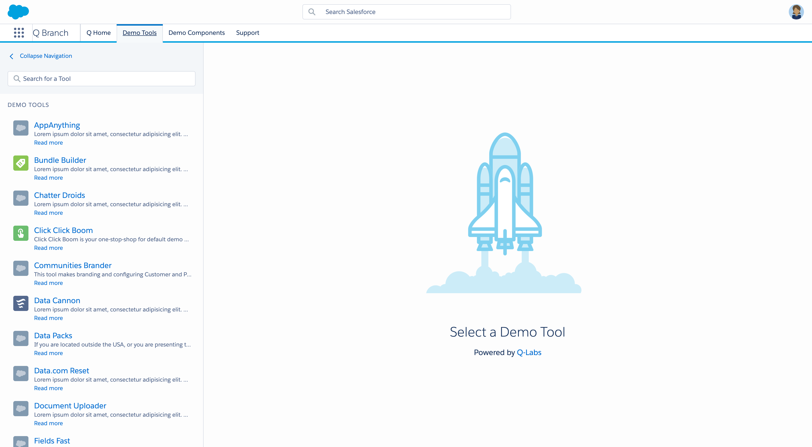

From Demo Chaos to Seamless Experience
Transforming a fragmented demo environment into a unified, scalable platform that saved 250+ developer hours per quarter and delighted Solution Engineers.
When spinning up a demo felt like assembling IKEA furniture without instructions, we knew change was necessary. As the sole UX engineer in our six-person, all-developer team, I spearheaded the initiative to streamline our demo tools, ensuring both end-users and developers had a cohesive and efficient experience.
🤔 How Might We...
...standardize and scale the creation of productivity solutions to provide demo creators with a centralized experience?
Our objectives were clear:
- Enhance efficiency: Reduce the time and complexity involved in setting up demos.
- Ensure consistency: Implement a standardized UI/UX across all tools.
- Improve scalability: Develop a system that could adapt to various demo environments.
🛠️ Approach
Assessing the Landscape
We began by evaluating our existing setup:
- A monolithic application that was challenging to maintain.
- Inconsistent UI/UX across different tools.
- Unstable integrations with Salesforce demo environments.
Introducing User-Centric Design
Recognizing the need for a more user-focused approach, we incorporated user research and testing into our development process. This shift ensured our solutions addressed real user needs and pain points.
Embracing Microservices Architecture
To enhance scalability and maintainability, we transitioned to a microservices architecture. This allowed individual components to be developed, deployed, and updated independently, fostering innovation and reducing interdependencies.
Leveraging Salesforce Lightning Design System (SLDS)
By adopting SLDS, we ensured a consistent and intuitive user interface across all tools, reducing the learning curve and enhancing user satisfaction.
🌟 Outcomes
- Reduced demo setup time by 50%, from 1 hour to 30 minutes. Saved approximately 250 developer hours per quarter through improved maintainability and scalability.
- Enabled rapid onboarding of new teams, allowing them to develop and integrate new demo tools swiftly and securely.
- Enhanced user satisfaction, with Solution Engineers reporting a more efficient and enjoyable demo experience.
💬 "Before, spinning up a demo felt like an obstacle course. Now I’m up and running in minutes. It’s a total game-changer!"— A delighted Solution Engineer
📸 A Glance at the Solution
 Personalized demo tools landing page — Solution Engineers are greeted with a dedicated homepage featuring their favorite demo guides and automation tools, streamlining their workflow from the get-go.🔍 Key Learnings
- Adopting an API-first approach is always a safe bet. It ensures flexibility, scalability, and easier integration, creating a robust foundation for long-term growth.
- Technology diversity can lead to unnecessary dependencies. We learned the hard way that agreeing on a common tech stack as a team enhances maintainability and streamlines development.
- Scalable design choices are crucial for long-term success. By leveraging a design system and testing early and often, we minimize technical debt and ensure a more sustainable codebase.
- Opening source code and documenting thoroughly accelerates developer onboarding. Transparent, well-documented code speeds up team integration and fosters a more collaborative, efficient development process.